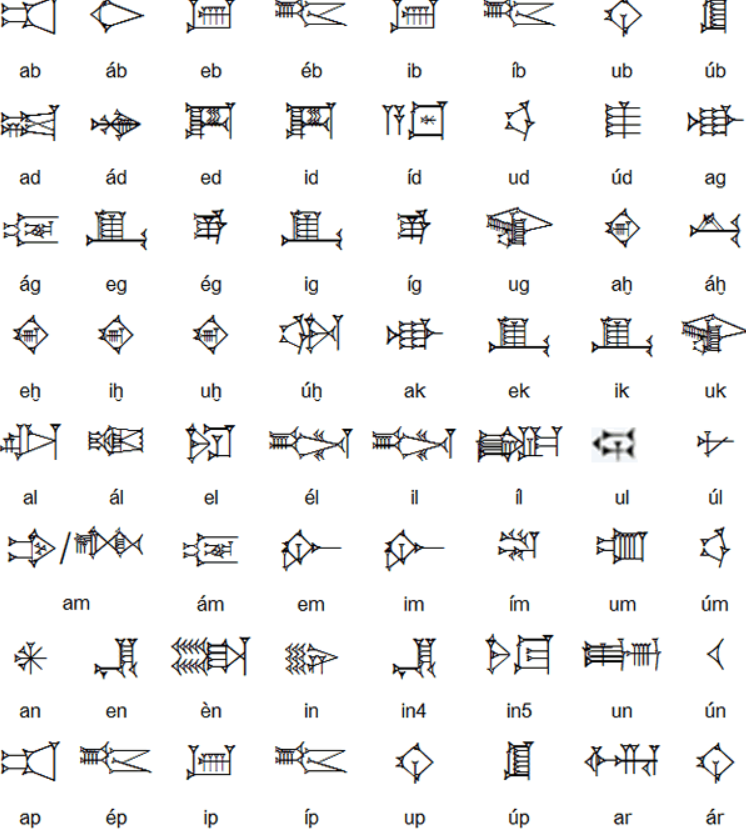
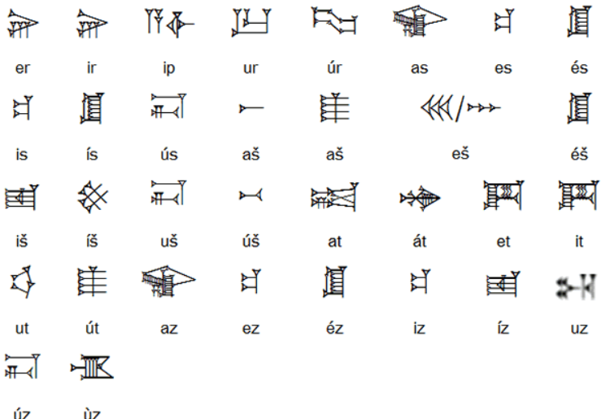

Cuneiform: The World's First Writing
The first writing systems developed independently in three different regions: ancient China, Mesoamerica, and Mesopotamia. While the origins of writing in China and Mesoamerica are difficult to trace, the evolution of writing across Mesopotamian civilizations has been studied extensively.
The cuneiform script originates from the Mesopotamian civilization of Sumer. Syllabic writing was an advanced idea, making cuneiform difficult to teach and learn. As a result, only noblemen, government officials, priests, and wealthy merchants were literate. Cuneiform was mostly used for state documents, religious scriptures, funerary traditions, and accounting purposes.
The development of cuneiform can be divided into three phases: 1) Tokens, 2) Pictography, and 3) Logography.
Phase One: The need for symbols

Between 8000-3500BC, merchants from Mesopotamia used clay tokens for accounting purposes. Tokens were made with clay, an abundant resource in the region. Clay could be shaped into a variety of different shapes and sizes to represent different goods.
Each token shape represented one type of good at a 1:1 correspondence. Cones, spheres, and flat disks could each represent a different measure of grain. One cone shaped token would represent one count of long grain. Merchants kept a collection of clay tokens to track inventory and negotiate trade agreements. Tokens were easily understood across language barriers, allowing trade between different Mesopotamian civilizations who spoke different languages.
While the token system shares little in common with cuneiform, the symbolic representation of tangible items was the first level of abstracting human concepts that later led to the development of symbols to represent speech.
Bullae
When trade was being negotiated across a longer distance, Sumerians used bullae- clay ‘envelopes’ that secured clay tokens inside. Each bulla would encase tokens representing a trade offer. Its exterior would be impressed with two dimensional symbols verifying its contents. These markings were the first signs of writing.
Phase Two: Pictography
As people grew familiar with the impressions on the exterior of bullae, the need for clay tokens diminished. Tokens were replaced with small clay tablets that were used as receipts documenting transactions. Clay tablets were impressed with a stylus, typically one made of reed.
Each pictograph was made up of two parts: A symbol representing the good, and a numeral made up of wedge and circle impressions representing the count. Numerals were written in the base ten system, with a wedge representing ten, and a circle representing one. This marked the first time writing adopted plurality: Symbols were representative of more than one count.
Phase Three: Logography
The final phase of cuneiform’s development shifted cuneiform from representing items visually to representing sounds. This change was initiated under Sumerian statehood, where new regulations were placed requiring the names of vendors and consumers.
Sumerians developed a system of logograms: unique signs representing words of the Sumerian language. The Sumerian language was monosyllabic; each word was only one syllable long. Names were represented as homophones by using a similar sounding word to represent each name. Names that were longer than one syllable were represented with a series of logograms.
The written representation of spoken language over tangible goods led to cuneiform being used for purposes outside of accounting. As people grew familiar with logograms, their usage spread to suit other needs. Tomb inscriptions describing the names, titles, and gods of worship became a part of funerary traditions to ensure ‘eternal life’ of the deceased, according to Sumerian creed. Tomb inscriptions varied in detail, with some even including a plea for life after death.
By 2500BC and onward, Sumerian writing was a complex system of 400 logograms. As neighboring civilizations adopted cuneiform, phonograms representing distinct syllables rather than words were added to expand cuneiform’s range.
Writing in Cuneiform
When writing in Cuneiform, scribes would tilt the clay or stylus to different angles to alter the length of the imprint left in the clay. Use the buttons below to change the length and direction of your writing on the clay canvas.

